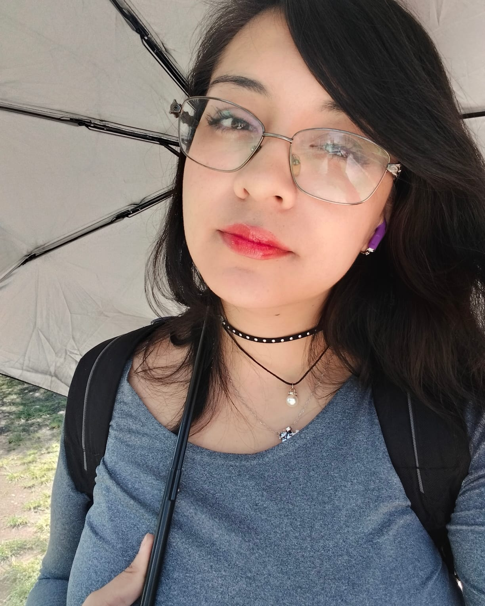

<html>
  </html>

<head>
    <title> Stephany Herrera Ayala</title>
<style type= "text/css">
        *{
           margin: 0;
           padding: 0;
       }
       header,nav,main,footer{
           
           width: 1060px;
           margin: 0 50px;
           padding:20px;    
           margin:auto;
       }
       header{
            background-color:#FFFFFF;
            color:maroon;
            text-align: center;
            /width: 960px;/
            height: 50px;         
                        }
       nav{
           background-color: darkcyan;
           height: 40px;
       }
       main{
           background-color: cornsilk;
       }
       section{
           background-color: cadetblue;
           width: 800px;    
           margin: 20px auto;
           padding: 30px;
           
       }
        h1,h2,h3,h4,h5{
    color: #FD050A;
    margin-bottom: 20px;
    margin-top: 20px;
             }
    p{
        color:bisque;
         }
        
      article{
            width: 500px;
            background-color:darkblue;
            }
            
      article p{
            color:azure;
          
            }
        a{ 
            margin: 0px 10px;
            font-weight: bold;
            text-decoration: none;
            }
         a:link{ 
            color:deeppink;
             
            }
        
         a:visited{ 
            color:aquamarine;
             
            }
         a:hover{ 
            color:cornsilk;
             text-decoration:underline;
             
            }
        
       footer{
           background-color:aqua;
           text-align: center;
           height: 20px;
       }
       nav{
           width:500px;
           height: 50px;
           text-align: center;
           background-color: transparent;
           }
       main nav a{
          text-decoration: none;
        padding: 10px;
            border-radius: 20px;
           }
      main  nav a:link{
           color:beige;
            background-color: saddlebrown;
            border: 2px solid red;
            }
            
    main nav a:visited{
           border: 10px solid beige;
                 color:beige;
            }
       main nav a:hover{
           text-decoration: none;
             color: saddlebrown;
             background-color: cornsilk;
              }
         img{
           width: 480px;
        height: auto;
             display: block;
             margin: 20px auto;
              }
        section article section img{
         width: 230px;
              }
        
        ul,ol{
            margin: 20px;
            color: violet;
            list-style-type: square;
            }
        
        ol{
            list-style-type: upper-roman;
            
            }
     #vineta_1{
            list-style-image:  url("../interfas/cine.png");
            }
       nav  ul {
            list-style-type: none;
           
           }
        nav  ul  li{
           display: inline-block;
            border: 1px solid brown;
           
           }
         nav  ul  a{
           margin:  0 20´x;
             font-weight: bold;
             text-decoration: none;
           }
        nav  ul a: link {
            padding:  5px;
            
           }
         nav  ul a: visited {
            color: azure;
           }
        nav  ul a: hover {
            text-decoration: none;
            color: darkseagreen;
           }
        footer{
            background-color: aqua;
            text-align: center;
            height: 20px
           }
           
    </style>
    <link href="style_page_galeria.css" rel="stylesheet" type="text/css">
    <link href="ccs/style_page_galeria.css" rel="stylesheet" type="text/css">
</head>
<body>
<header>
    <h1> Stephany Herrera Ayala </h1>
</header>
    <nav>
    
     <a href="index.html">Inicio </a>
            <a href="html/galerianueva.html">Galeria</a>
			<a href="html/Practicas.html">Practicas</a>
			<a href="html/contacto.html">Contacto</a>
    </nav>

    <main>
      <section>
        <h1>¿ Quién soy?</h1>
          <p>Me gusta hacer cosplay, el chismecito, platicar, jugar videojuegos, aunque soy muy manca, pero me esfuerzo. ♥Me gustaría que crezcamos mucho como familia. ♥Tengo 28 años ♥Soy de México ♥Obsesionada con los gatos ♥Me gusta conocer cosas nuevas ♥Me encanta descubrir juegos nuevos o probarlos ♥Me gusta leerlos y tratar de darles algún consejito ♥Estudiante de Diseño Gráfico (si gustas algún trabajo pregunta con confianza)</p> 
          
    
        </section>
        
        <section>
        
        <h2><strong>Instagram</strong></h2>
            <p> piedes conocer mis redes sociales por medio de:
            
            <a href="https://www.instagram.com" target="blank"> Mi instagram
                </a>
            </p>
        </section>

        <section>
        <h2>Hobbies</h2>
        
            <p>Me gusta jugar videojuegos como son :►Valorant ►Fornite ►Darkest Dungeon ►Kukoro ►Gartic (sus variantes) ►Fall Guys ►Terraria ►OSU ►ETC..</p> 
            
                 
           <article>
            
<h2> Peliculas/series</h2>
                <p>El extraño mundo de Jack&nbsp;</p>
            <article/>
            
                <article>
                <h3>Series sobre Marvel</h3>
                <h4>Daredevil</h4>
                    <p>Serie de antiheroe&nbsp;&nbsp;</p>
                    <a href="../cartel/Daredevil_Vol_6_21_Textless.webp"target="_blank"> Personaje Principal</a>
                    
                    <ol>
                    
                    <li>daredevil</li>
                         <li>&nbsp;Kingpin</li>
                         <li>Castigador</li>
                         <li>Elektra Natchios</li>
                         <li>Foggy Nelson</li>
        
                    </ol>
                    
                    <h4>Hawkeye</h4>
                    <p>Clint Barton y Kate Bishop disparan flechas mientras evitan convertirse ellos mismos en el blanco cuando la situación cambia.</p>
                    <ul>
                    
                    <li>Hailee Steinfeld</li>
                         <li>Jeremy Renner</li>
                         <li>Alaqua Cox</li>
                         <li>Florence Pugh</li>
                         
                    </ul>
</article>
               </section>
            
        <section>
        <h3> Videojuegos Favoritos</h3>
            <h4>Valorant</h4>
            <p>Valorant es un hero shooter en primera persona multijugador gratuito desarrollado y publicado por Riot Games. El juego se anunció por primera vez con el nombre en clave Project A en octubre de 2019. Fue lanzado para Microsoft Windows el 2 de junio de 2020 después de su beta cerrada lanzada el 7 de abril de 2020.&nbsp;</p>
            <h4>Fortnite</h4>
            <p>Fortnite es un videojuego del año 2017 desarrollado por la empresa Epic Games lanzado como diferentes paquetes de software que presentan seis diferentes modos de juego, pero que comparten el mismo motor de juego y mecánicas. Fue anunciado en los premios Spike Video</p>
            <h4>Resident Evil</h4>
            <p>Resident Evil 4 — conocido en Japón como Biohazard 4 — es un videojuego de acción-aventura de disparos en tercera persona perteneciente al subgénero de terror y supervivencia desarrollado por Capcom Production Studio</p>
            <h4>Guardian Tales</h4>
            <p>Guardian Tales es un videojuego de rol de acción desarrollado por Kong Studios y publicado por Kakao Games. El juego fue lanzado el 24 de febrero de 2020 en Corea del Sur para iOS y Android y, posteriormente, el 28 de julio de 2020​ para el resto del mundo</p>
            <h4>Minecraft</h4>
            <p>Minecraft es un videojuego de construcción de tipo «mundo abierto» o en inglés sandbox creado originalmente por el sueco Markus Persson, que creo posteriormente Mojang Studios.&nbsp;</p>
        </section>
        <section>
        <h3>Música</h3>
            <p>Aqui se expondra un poco de mi musica preferida</p>
                <h3>Grupos/Cantantes Favoritos</h3>
            <h4>The Gazette</h4>
                <p>The Gazette –estilizado como the GazettE–, es una banda japonesa de metal alternativo formada en el año 2002, inicialmente bajo el nombre de Gazette por Ruki, Uruha y Reita</p>
            <h4>Panda</h4>
                <p>PXNDX fue una banda mexicana del Rock alternativo originaria de Monterrey, Nuevo León formada en 1996 por José Madero, Arturo Arredondo, Ricardo Treviño y Jorge Vázquez "Kross".&nbsp;</p>
                <h4>Sin Bandera</h4>
                <p>Sin Bandera es un dúo méxicoargentino formado por el mexicano Leonel García y el argentino Noel Schajris en 2000. Se separaron por única vez en 2008, volviéndose a juntar en noviembre de 2015 para realizar una gira de conciertos.​​&nbsp;</p>
                <h4>Karon G</h4>
                <p>Carolina Giraldo Navarro, conocida artísticamente como Karol G, es una cantante, compositora, actriz, productora y empresaria colombiana.</p>
                <h4>Gorillaz</h4>
                <p>Gorillaz es una banda virtual inglesa creada en 1998 por Damon Albarn y Jamie Hewlett. La banda está compuesta por cuatro miembros ficticios: 2-D, Noodle, Murdoc Niccals y Russel Hobbs</p>
                <h4>Nanpa Básico</h4>
                <p>Francisco David Rosero Serna, más conocido como Nanpa Básico, es un rapero y compositor que se ha convertido en uno de los exponentes más relevantes del rap y el movimiento independiente latinoamericano.</p>
</section>
        <nav>
        <a href="#titulo1">¿Quien soy yo?</a>
        <a href="#titulo2">Hobbies</a>
        </nav>
   <footer>
     <h6>Elaborado por: Herrera Ayala Stephany</h6>
   </footer>
    </main>
</body>